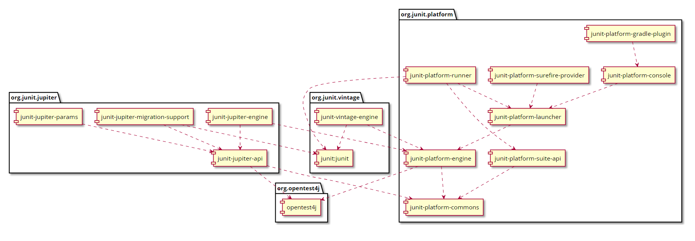

Wprowadzenie do JUnit 5
O czym mówić nie będę
Co to są testy?
Po co są testy?
Jak pisać dobre testy?
Spock
Najpopularniejszy (?) framework do testów
Część platformy xUnit
SUnit – Smalltalk testing framework
(S)Twórcy
Kent Beck

Erich Gamma
JUnit 4

JUnit 5
JUnit 5
=
JUnit Platform
+ JUnit Jupiter
+ JUnit Vintage